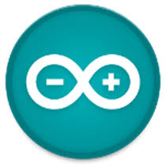
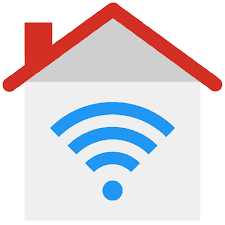
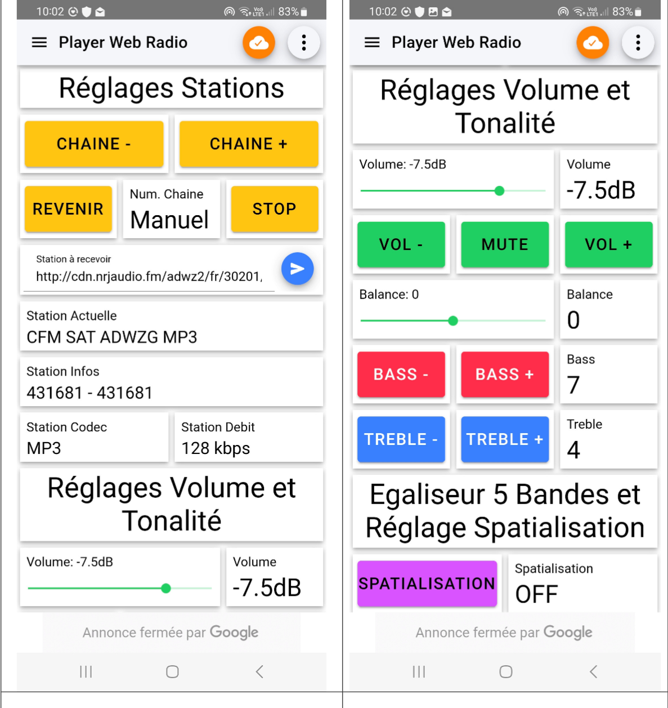

Résumé de la SAE
Objectif : Le but de ce projet est d'utiliser et de programmer deux cartes Arduino imbriquées dans le but d'accéder à la radio via internet. J'ai utilisé une application sur Android pour commander cette webradio à distance.
Au cours de ce projet, j'ai pu acquérir des compétences en programmation C++, l'utilisation de la carte Arduino ESP32 et la prise en main de l'Arduino IDE.
Consulter le code source sur GitHubEnvironnement et Outils
ESP32 & VS1053b
Microcontrôleur ESP32 (module Wi-Fi) couplé à une carte Codec audio VS1053b pour le décodage matériel des flux mp3 et AAC.

Arduino IDE
Environnement de développement utilisé pour la programmation en C++ du microcontrôleur et l'intégration des différentes bibliothèques réseau et audio.

IoT MQTT Panel
Application Android permettant de créer une interface de contrôle à distance (sliders, boutons) communiquant via le protocole MQTT.
Aperçu du système


Grandes étapes techniques
1. Communication Matérielle
L'ESP32 interagit avec le codec audio VS1053b via le bus SPI (Serial Peripheral Interface), un protocole synchrone utilisant les broches MOSI, MISO, SCK et des signaux de contrôle comme XDCS.
2. Décodage Audio Matériel
Le VS1053b prend en charge le décodage direct des flux MP3/AAC. Le contrôle du son s'effectue en écrivant dans ses registres SCI, comme SCI_VOL (volume) et SCI_BASS (basses et aigus).
3. Gestion Dynamique du Wi-Fi
Implémentation de la bibliothèque WiFiManager. Elle permet à l'ESP32 de créer un portail captif temporaire si aucun réseau n'est connu, évitant ainsi de coder les identifiants Wi-Fi en dur dans le programme.
4. Lecture des Flux (Streaming)
Utilisation de la bibliothèque ESP32_VS1053_Stream pour récupérer les flux audio des webradios directement depuis leurs URL et les envoyer au décodeur de manière fluide.
5. Commandes Clavier (Série)
Création d'une interface de pilotage local via la console série USB (115200 baud). L'écoute du clavier permet à l'utilisateur de changer de station (n/v), régler le volume (y/b), ajuster les basses/aigus, ou activer la spatialisation (s).
6. Télémétrie et Contrôle MQTT
Mise en place du protocole MQTT (Message Queuing Telemetry Transport), basé sur la publication-abonnement (PubSub). Il permet de recevoir les commandes de l'application Android et de renvoyer l'état actuel de la radio.
7. Traitement Spatialisant
Activation de la fonction EarSpeaker du codec via le registre SCI_MODE pour simuler une écoute sur haut-parleurs via un casque, et utilisation d'un plugin pour intégrer un égaliseur 5 bandes.
Compétences validées
Détail des Apprentissages Critiques (BUT1) développés lors de cette SAE :
- AC12.03 Déployer des supports de transmission.
- AC13.01 Utiliser un système informatique et ses outils.
- AC13.02 Lire, exécuter, corriger et modifier un programme.
- AC13.06 S'intégrer dans un environnement propice au développement et au travail collaboratif.
Analyse réflexive
Ce projet fut particulièrement intéressant à réaliser car il nous invite à découvrir par nous-mêmes les différentes fonctionnalités disponibles en explorant les fiches techniques des composants et les capacités des bibliothèques. Ce travail de programmation conjointe m'a de plus appris à gérer efficacement un projet en équipe.